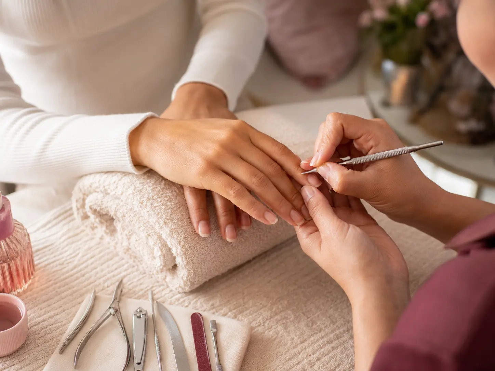

Manicure en Modelia
Manicure a domicilio en Modeliamás tiempo para ti.
Recibe una atención cuidada en casa, con opciones tradicionales y semipermanentes.

Servicio a domicilio
Modelia, Bogotá
Modelia, Bogotá
Cuidado en cada paso
Cuidado profesional sin salir de Modelia
Coordina el servicio, el retiro previo y el horario desde WhatsApp para que tu cita sea clara desde el comienzo.
Servicio personalizado
Elige forma, longitud y tipo de esmalte.
Elige forma, longitud y tipo de esmalte.
Comodidad
Evita traslados y organiza la cita en tu espacio.
Evita traslados y organiza la cita en tu espacio.
Preparación ordenada
Implementos listos para el servicio solicitado.
Implementos listos para el servicio solicitado.
Cobertura
Modelia, Bogotá
Modelia es una de las zonas principales de atención. Para barrios cercanos, la cobertura depende de la ruta disponible para el día de tu cita.
Confirmar mi zona por WhatsApp →Antes de reservar
Cuéntanos qué necesitas
Indica si tienes esmalte anterior, el tipo de servicio que buscas y el sector donde estás. Así será más fácil confirmar el tiempo y la cobertura.
También puede interesarte
Explora más opciones
Agenda desde casa
Confirma zona, servicio y horario
Escríbenos para consultar disponibilidad.
Escribir por WhatsApp